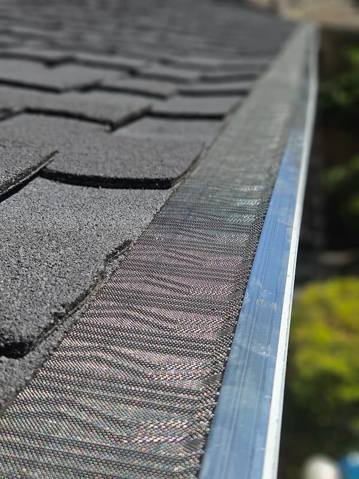
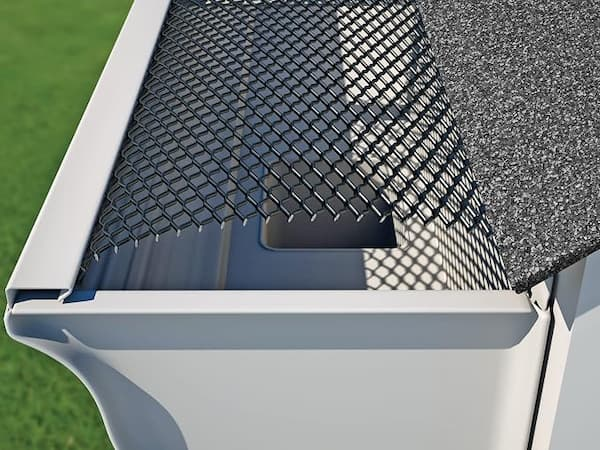

Our Gutter Services
From premium micro-mesh to specialized metal and tile roof installs — plus cleaning when you need it.

Micro-Mesh Screens
Stainless steel mesh blocks the smallest debris — pine needles, shingle grit, and seed pods. Best for homes under oak or pine trees.

Basic Screen & Clip
Galvanized or PVC screen with clips. Budget-friendly protection for homes with light tree coverage.

Metal & Tile Roof Specialists
Standing seam metal and tile roofs need specific clips and mounting methods — not universal hardware. We install screens made for your exact roof type, so nothing shifts, scratches, or voids a warranty.
Free on-site assessment

Gutter Cleaning
Free with any screen installation. Standalone service available — we scoop, flush, and check downspouts so your system keeps flowing.